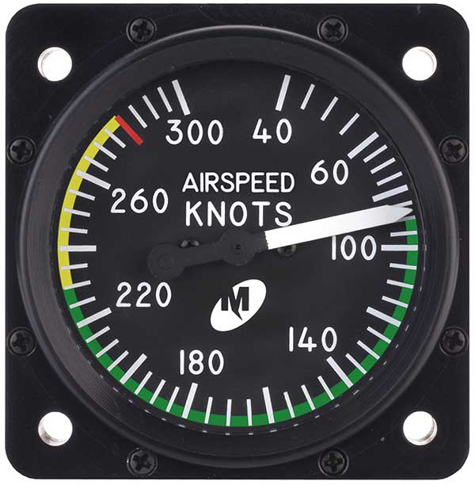
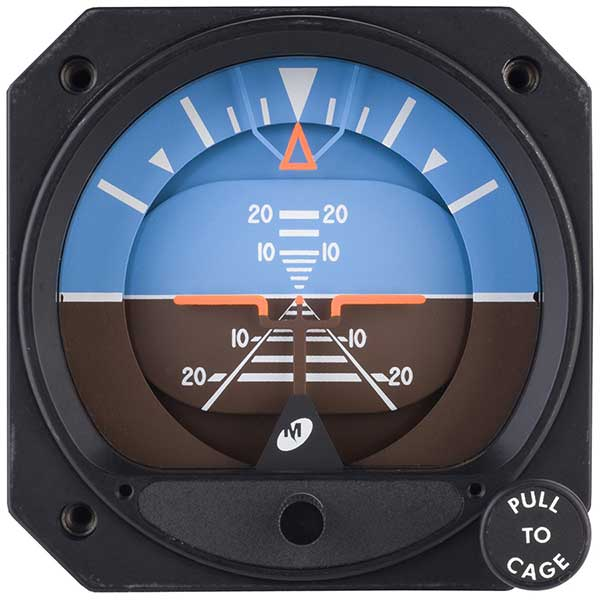
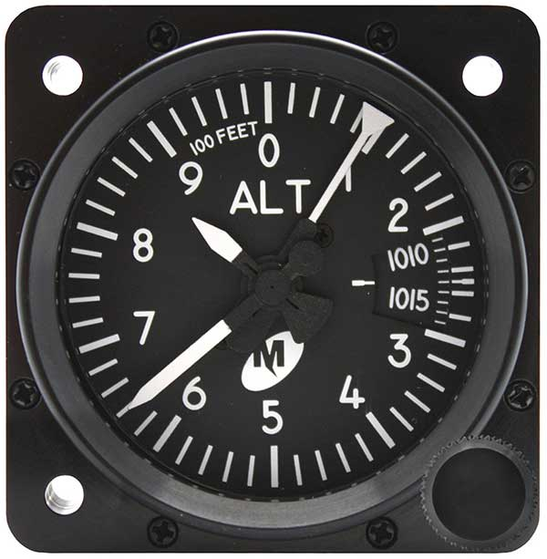
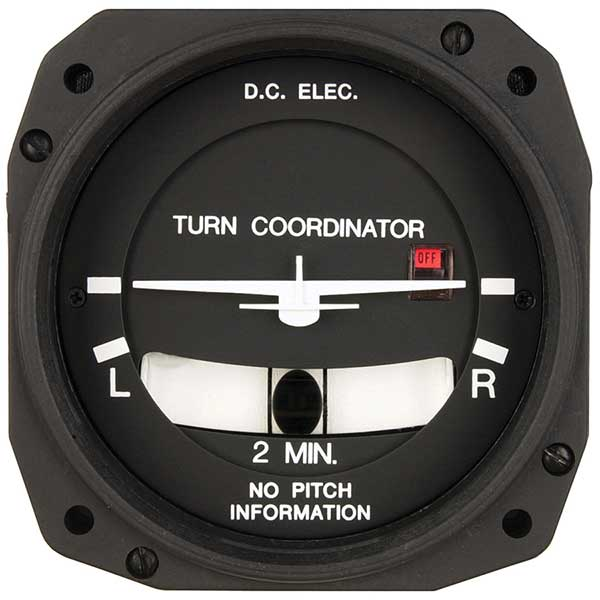
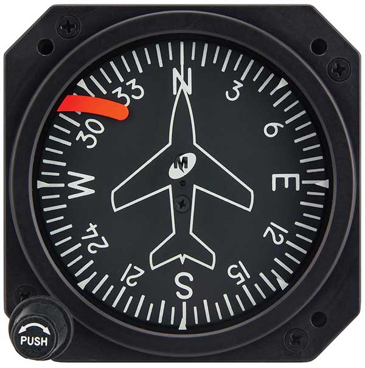
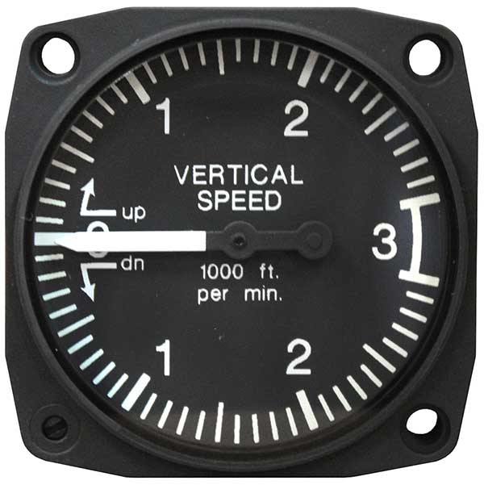

The Pilots 6-Pack: Explained
 A pack of 6 instruments in a Cessna 172.
A pack of 6 instruments in a Cessna 172.
What is the "Pilots 6-Pack?"
The 6-Pack refers to the six basic instruments in most aircraft cockpits. Here, I will explain what each of them mean and what they do.
| Airspeed Indicator | The ASI, or Airspeed Indicator usually measures the speed in knots. The needle points to the aircraft's current airspeed. The green arc represents the normal operating speed range of the aircraft. The yellow arc represents the caution area, where the aircraft still may withstand the speeds but be very cautious. The red line represents the speed in which you should never exceed, because the aircraft is not designed to be at that speed. |  |
| Attitude Indicator | Also known as the artificial horizon, the AI uses an internal gyro to display the aircraft's attitude relative to the horizon. The display consists of a miniature aircraft aligned to the horizon in straight-and-level flight, with a blue sky above and brown or black ground below. When the aircraft changes pitch or direction, the aircraft rotates around the AI's gyro, and the instrument display responds accordingly. |
 |
| Altimeter | The altimeter uses barometric pressure to display the aircraft's approximate altitude above mean sea level in feet. Three pointers provide the altitude information in 100, 1,000 and 10,000 foot increments. Because barometric pressure changes with altitude and atmospheric conditions, most altimeters contain an adjustment knob to dial in the local barometric pressure. |
 |
| Turn Coordinator (TC) | The TC uses an internal gyro to display both initial roll rate and stabilized rate of turn. An aircraft silhouette mimics the aircraft to show the direction of turn, and will align with a mark on the display if the aircraft is turning in a standard rate of three degrees per second. |  |
| Heading Indicator (HI) | The HI uses a rotating gyro to display the current compass rose direction (otherwise known as the heading) that the aircraft is flying. Using a 360-degree compass card with north as zero or “N,” the HI shows headings in 5-degree increments with every 30 degrees enumerated. To reduce crowding, the last “zero” of the heading is omitted—”3” is 30 degrees, “12” is 120, etc. |  |
| Vertical Speed Indicator (VSI) | The VSI is an indication of how fast the aircraft is climbing or descending. It is measured in feet per minute (fpm) |  |